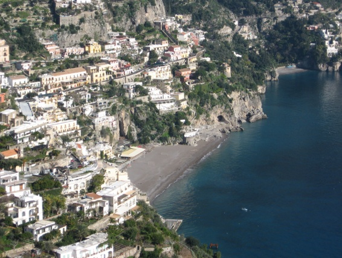
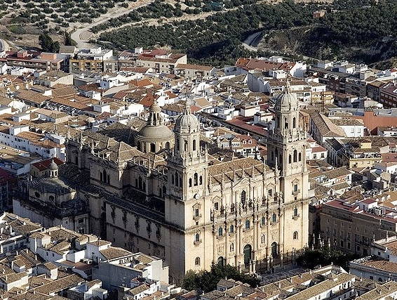
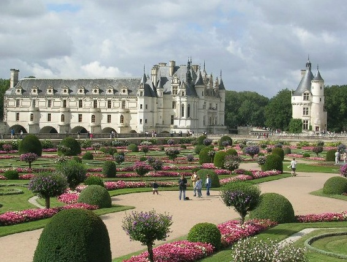

Setiap negara pasti mempunyai keajaiban dan pemandangan menakjubkan tersendiri, namun sepuluh negara ini memiliki keindahan alam yang luar biasa dan juga buatan tangan manusia yang menjadi keajaiban dan meningkatkan wilayah mereka dengan segala sesuatu dari kota-kota yang indah untuk sebuah desa abadi, taman megah dan pemandangan murni. Negara-negara yang menawarkan berbagai pemandangan dan berlimpahnya inspirasi dari manusia dan alam. berikut ini adalah daftar 10 tempat wisata yang terindah di dunia yang yoshiewafa.blogspot.com ambil sesuai dengan 10 negara terindah di dunia menurut ucityguides.com
 Sebuah Kota dunia yang paling indah, harta budaya yang paling inspiratif, serta pemandangannya yang mengagumkan. Anda akan menemukan keindahan yang sangat banyak disini. seperti di Venice, Florence dan Roma dengan arsitektur khas masing-masing yang bervariasi, karya alam yang menakjubkan dengan bukit-bukit yang indah, kebun-kebun anggur serta pegunungan salju yang memuncak. Lalu disini juga terdapat lukisan naturalis yang sempurna seperti Pantai Amalfi atau Danau Maggiore dan Alpen dan Anda juga akan mendapatkan pengertian bahwa tidak ada negara lain di bumi yang menawarkan banyak sekali keindahan di mana pun Anda melihat seperti Italia.
 Ciri khas yang paling umum dari Spanyol adalah dari atas pembangunan yang indah mulai dari Costa del Sol ataupun garis pantai dari beberapa Kepulauan Balearic, namun Spanyol sebenarnya jauh lebih dari itu. Mungkin Spanyol termasuk dalam kategori negara yang paling beragam di dunia, dengan segala macam sesuatu dari desa Mediterania yang putih untuk pusat-pusat perkotaan yang sangat canggih. Anda tidak akan dapat menemukan sebuah kota dengan cita rasa yang lebih besar daripada Barcelona, dan dari Pyrenees menuju ke Andalusia, Spanyol dapat berfungsi sebagai sebuah latar belakang untuk setiap jenis film, buku ataupun lukisan. Negara ini juga yang paling menggoda di dunia, bergairah tentang kehidupan yang sangat baik tercermin pada setiap plaza besar di kota-kota kecil bahkan, di pusat-pusat bangunan bersejarahpun terawat dengan baik, dan yang terkecil desa bertengger di puncak bukit. Dan untuk melengkapi semua ini, ada beberapa tempat termegah, paling kuat dan tidak tertandingi harta arsitektur dunia lain, dari Alhambra menuju ke Masjid Agung Cordoba.
 Paris memiliki pancaran suasana yang paling sempurna serta keagungan budaya meskipun ibukota negara Prancis ini mendapatkan banyak perhatian, Prancis menawarkan keindahan lebih banyak Desa yang mempunyai pesona yang berlimpah di dunia lama, dari seluruh kemegahan Lembah Loire menuju ke verdant Provence. Lalu ada juga glamor Riviera dan jika Anda ingin melihat istana yang terbesar di dunia seperti (Versailles) dan museum (Louvre), di sinilah tempatnya. Perancis juga merupakan negara berkelas dunia, di kota-kota sempurna yang terawat dan di daerah kawasan penghasil anggur seperti Bordeaux dan Champagne. Jika itu saja masih tidak cukup, Anda dapat melihat keagungan Mont St Michel, berbagai macam puri di seluruh negara dengan panorama spektakuler lembah Chamonix.